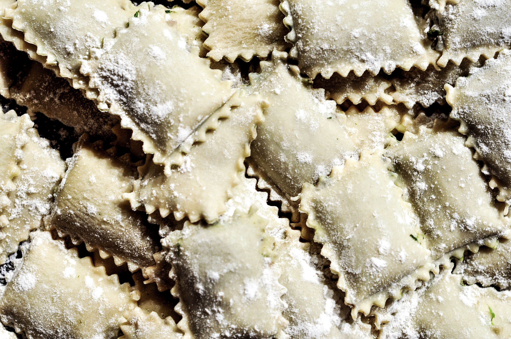

라비올리(ravioli)에 대한 정확한 기원은 잘 알려지지 않았으나, 중세시대에 탄생한 것으로 보는 것이 일반적인 견해이다. 중세시대는 이탈리아에서 파스타 생산 기술이 발달하던 시기이기도 했다. 라비올리(ravioli)는 1353년 발간된 보카치오(Boccaccio)의 저서 『데카메론』(Decameron)에 등장하는 것으로도 유명하다. 벤고디(bengodi)라 불리는 상상 속 구르메 파라다이스(gourmet paradise)가 등장하는 장면으로 산처럼 쌓인 파르미지아노 레지아노 치즈가루 위에서 마카로니(macaroni)와 라비올리(ravioli)를 만들어 닭 육수에 넣고 끓여 먹는 사람들의 광경이 묘사되어 있다. 오늘날 라비올리(ravioli)와 토르텔리(tortelli)는 모두 파스타 리피엔나(pasta ripiena), 즉 반죽 안에 다양한 속재료를 채워 넣은 형태의 파스타에 속한다. 그러나 초기의 라비올리(ravioli)는 주로 속재료(filling)만을 의미했고, 이를 감싸는 파스타 반죽은 토르텔리(tortelli)라는 이름으로 구분되어 불렸다. 이렇게 라비올리와 토르텔리를 명확히 구분했던 사실은 14세기 쓰여진 작자 미상의 『요리책(Liber de Coquina, The book of cooking)』에도 잘 설명되어 있다. 이 책에는 돼지의 뱃살을 곱게 갈고 달걀, 치즈, 우유, 향신료를 넣은 후 달걀 만한 크기의 소, 라비올리(ravioli)를 만들고, 이것을 파스타 반죽인 토르텔리(tortelli)로 감싸 기름을 넉넉히 두른 팬에 넣고 튀기거나 먹기 전 꿀에 담가 먹는다고 적혀 있다. 라비올리는 파스타 반죽에 감싸지 않은 소를 재료로 미트볼(meatball)처럼 빚어서 먹기도 하였다. 1284년 발간된 책 『파르마 출신 수사 살림베네의 연대기(Cronica di Fra Salimbene da Parma)』에도 성녀 클라라(Saint Clare)의 축제에서 반죽에 감싸지 않은 라비올리를 먹은 이야기가 나오며, 15세기와 16세기 이탈리아 르네상스 시대의 유명 셰프였던 마르티노(Mestro Martino)와 스카피(Scappi) 역시 파스타 반죽에 감싸지 않고 소 만을 먹는 라비올리의 레시피를 소개하였다. 소 만을 라비올리로 구분하는 기록은 19세기 펠레그리노 아르투시(Pellegrino Artusi)의 저서 『주방에서의 과학과 잘 먹는 법(The Science in the Kitchen and the Art of Eating well)』에도 남아 있다. 아르투시는 로마냐 스타일의 라비올리는 리코타 치즈, 달걀, 밀가루로 빚은 작은 소를 끓는 물에 삶아 치즈와 미트 소스로 맛을 낸 것으로 소개했으며, 제노바 스타일의 라비올리는 파스타 반죽으로 소를 감싸 만들기 때문에 엄격한 의미에서는 라비올리라 할 수 없다고 설명하였다. 이후 라비올리가 언제부터 오늘날과 같이 파스타 반죽으로 소를 감싸는 형태로 정착하게 되었는지는 정확히 알 수 없으나, 생면을 사용하는 이탈리아 중북부 지방을 중심으로 지역에 따라 모양과 크기, 속재료 그리고 불리는 이름까지 다양하게 진화하였다. 모양과 크기 속재료 등이 달라 이름을 달리 부르는 경우도 있지만, 특히 어떤 경우에는 똑같은 형태를 다른 이름으로 부르기도 하고, 전혀 다른 것을 같은 이름으로 부를 때도 있어 오늘날 전해 내려오는 다양한 라비올리의 종류와 특징을 명확히 정의하기는 어렵다. [네이버 지식백과] 라비올리 (세계 음식명 백과, 마로니에북스)
